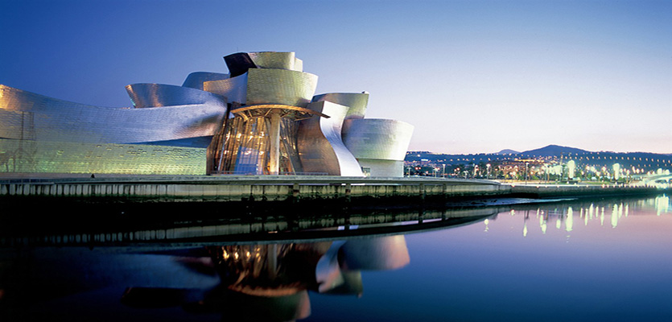
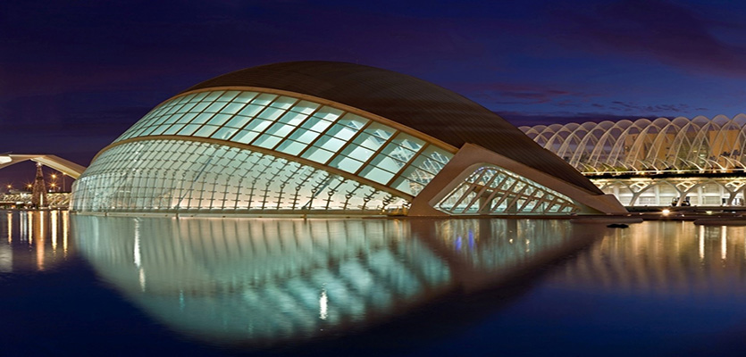
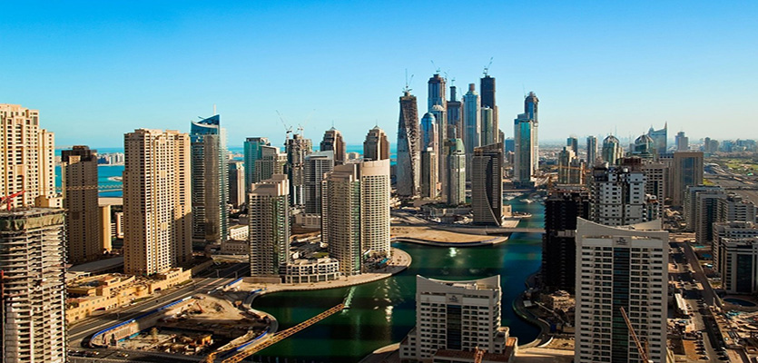
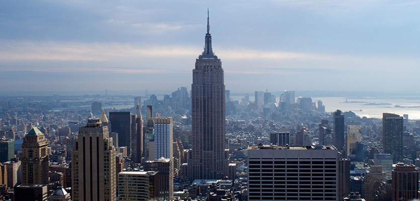
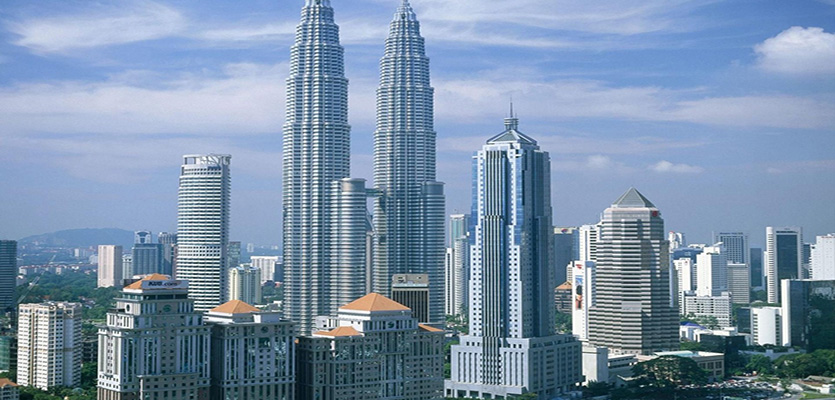
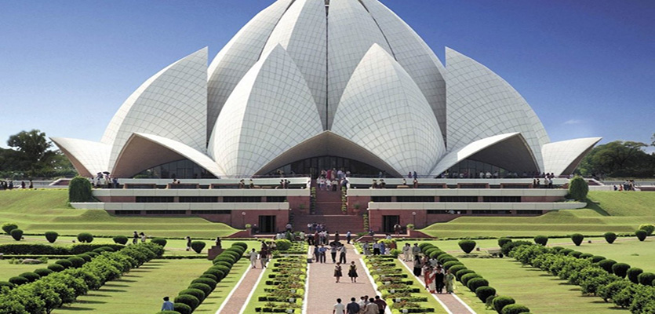
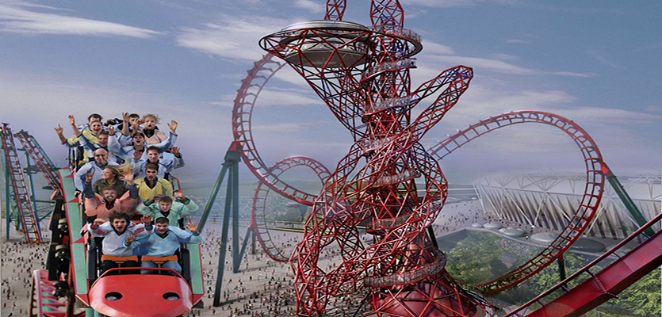
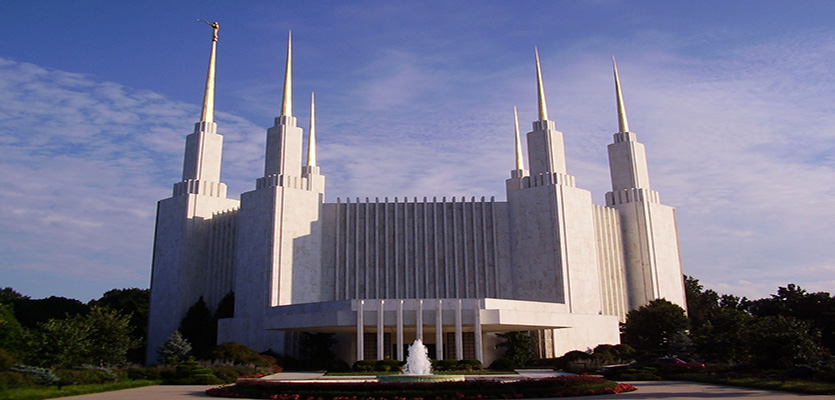
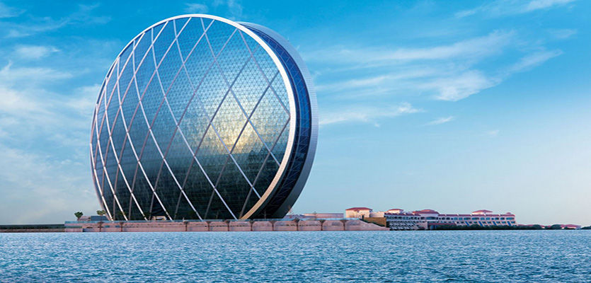
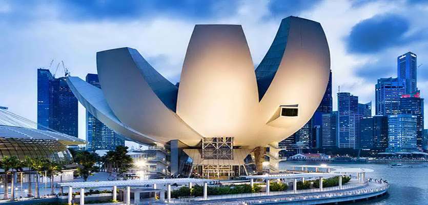

- Spain
- Spain
- United Arab Emirates
- United States of America
- Malaysia
- India
- Great Britain
- United States of America
- United Arab Emirates
- Singapore
Moderna arhitektura je usla u 21. st. kao savremeni stil, pogotovo za poslovne ustanove. U vecem smislu, moderna arhitektura je pocela u 20. st. sa trudom da se promijene principi arhitekturalnog dizajna sa tehnoloskim napretkom i modernizacijom drustva.
Funkcionalne i formalizovane oblike i prostore modernjackih pokreta su zamijenjene raznovrsnim estetikama: sudaranje stilova, slobodna adaptacija forme i novi nacini gledanja slicnih stilova i prostora. Klasicni primjeri moderne arhitekture su "Lever House" i "Seagram Building" u komercijalnom prostoru te arhitektura Frank Lloyd Wrighta ili "Bauhaus pokret" u privatnim ili komunalnim prostorima.
Danas, odrzljivost okoline je postao problem sa dubokim utjecajem na arhitekturalnu profesiju. Mnogo stvaraoca, oni koji podrzavaju financiranje gradjevina, su postali nauceni da ohrabruju smanjivanje nivoa zgrada ne vezanih za okolis.
Broj zgrada koje zele da ispune principe gradjevina vezanih za okolis se povecava.
 8
8